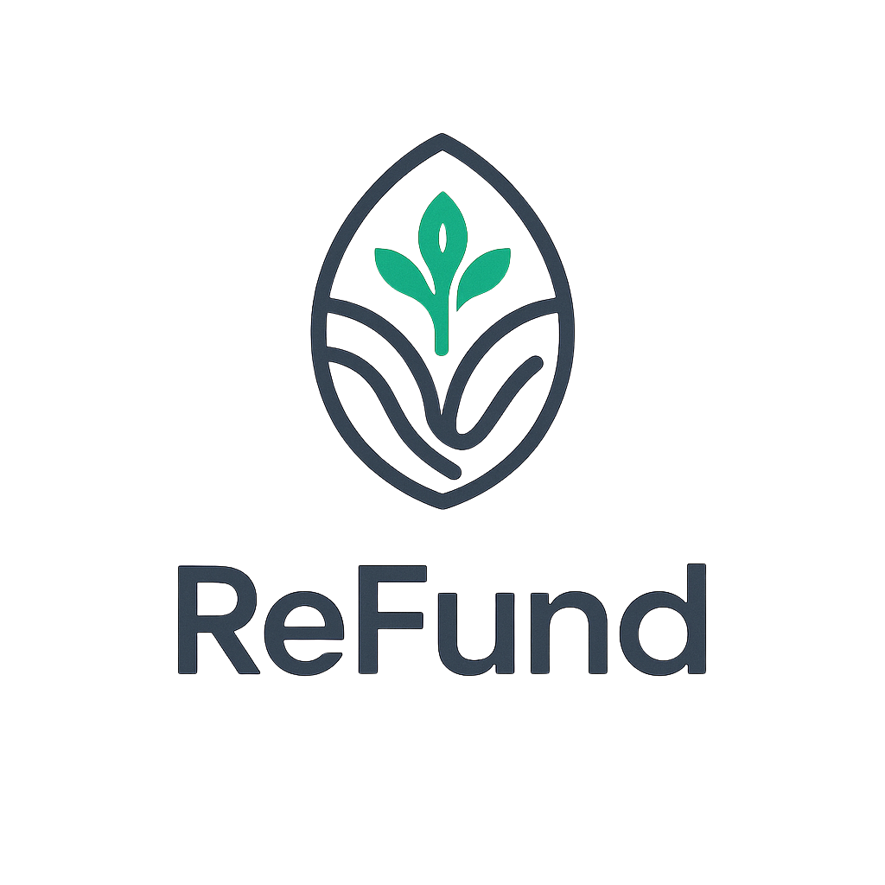
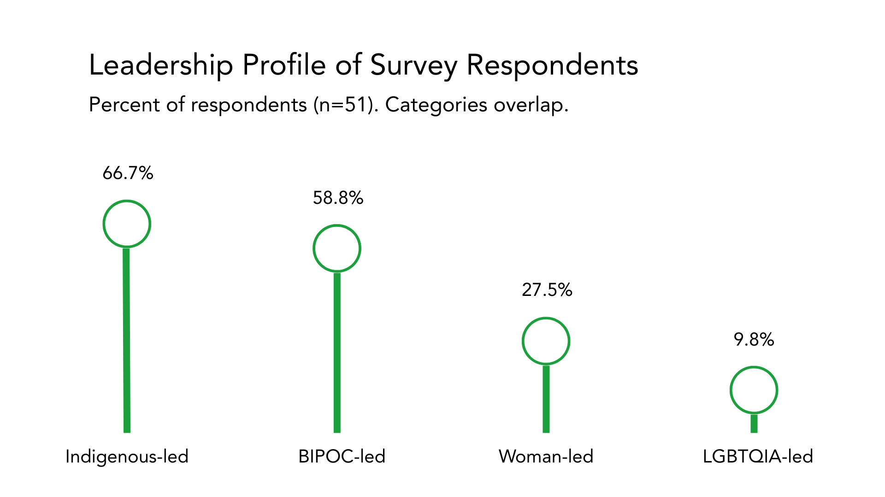

Bridging the Gap
Cash Flow Challenges in Government-Funded Work
Executive Summary
Government funding is a critical source of support for nonprofit organizations and Tribes delivering essential publicly funded programs. It is estimated that around one trillion dollars per year flows to nonprofits from the government in the form of grants and contracts. Yet, this funding is typically delivered through reimbursement-based payment structures that create significant cash flow challenges for the organizations responsible for implementing these critical programs.
According to Urban Institute's report, "Contracts and Grants between Nonprofits and Government," when payments are delayed, nonprofits must cover program costs while waiting for reimbursement, often drawing down reserves, using lines of credit, taking high-interest loans, or taking on financial risk in order to continue serving their communities.
This report examines the impact of reimbursement-based funding through a survey of nonprofit organizations and Tribes across the United States. The findings reveal that cash flow instability is widespread and that existing financing tools often shift additional risk onto organizations with limited access to flexible capital. The report also highlights recoverable grants as a practical financing tool that can bridge reimbursement gaps and strengthen the ability of nonprofits and Tribes to deliver publicly funded programs.
Key Findings
- Cash flow instability is widespread. 83% of organizations receiving government funding report cash flow challenges related to reimbursement-based payment systems.
- Reimbursement delays are a primary driver. 91% cite delays in government payments and 86% cite reimbursement-based funding models as key causes of cash flow instability.
- Organizations absorb the financial risk. 74% draw on reserves, 40% borrow, and 20% rely on personal or leadership loans to bridge funding gaps.
- Cash flow instability disrupts program delivery. 57% delay work, 54% reduce scope, and 23% decline funding opportunities due to cash flow constraints.
- Borrowing is not a sustainable solution. No organization that borrowed reported doing so without negative consequences.
- Recoverable grants offer a transformative alternative. Respondents consistently identified zero-interest bridge capital as a tool that would allow them to deliver programs without assuming additional financial risk.
Respondent Profile
This survey gathered responses from nonprofit organizations and Tribes that regularly implement publicly funded programs and therefore experience the impacts of reimbursement-based funding structures. Fifty-one nonprofit organizations and Tribes across the United States participated.
The respondent pool includes organizations led by people from historically undercapitalized communities:

- 66.7% are Indigenous-led
- 58.8% are woman-led
- 27.5% are BIPOC-led
- Overall, 82.4% meet at least one marginalized leadership definition
These organizations serve Indigenous communities, environmental and climate priorities, education initiatives, food systems programs, and social justice efforts. Nearly half of respondents operate with annual budgets under $1 million.
Government Funding Is Core Revenue
For most respondents, government funding is a central component of their financial sustainability.
- 76% received government funding within the past five years.
- 45% rely on government funding for more than half of their annual budgets.
- 12% rely on government funding for 76–100% of their total budget.
This reliance on government funding amplifies the consequences of delayed reimbursements. When payments are delayed, organizations must continue delivering programs while absorbing the consequences and financial burdens of those delays.
Cash Flow Instability Is Widespread
Among organizations receiving government funding (n=42), 83% report experiencing cash flow challenges related to government funding.

Common Causes
Respondents identified several common causes:

These findings indicate that liquidity disruptions are not isolated incidents but a routine feature of reimbursement-based funding systems. 60% reported encountering three or more types of cash flow issues.
Financial Strain & Organizational Consequences
When reimbursements are delayed, organizations must cover program expenses while waiting for payment. As a result, nonprofits and Tribes frequently absorb the financial risk created by reimbursement-based funding structures.

These responses shift liquidity risk from public institutions to nonprofit organizations. Reserve depletion weakens long-term resilience, while borrowing introduces additional administrative and financial burdens.
Operational Impact
Cash flow instability also disrupts program delivery and organizational capacity. Among organizations experiencing cash flow challenges:

- 57% delayed work
- 54% reduced the scope of work
- 29% chose not to move forward with planned activities
- 23% declined funding opportunities due to cash flow concerns
Organizations Are Declining Government Funding
For some organizations, the financial risk associated with reimbursement-based funding becomes significant enough that they reduce or decline participation in government programs.
Borrowing Is a Costly Solution
Some organizations attempt to manage reimbursement delays by borrowing. However, survey findings indicate that debt-based solutions frequently introduce additional challenges.

No organization that borrowed reported doing so without negative consequences.
A Practical Path Forward: Recoverable Grants
The survey findings highlight a structural challenge in government-funded work: nonprofits and Tribes must carry the financial burden of publicly funded programs while waiting for reimbursement. Recoverable grants offer a practical non-extractive alternative.
By providing widely available zero-interest working capital that is repaid once government reimbursements are received, recoverable grants align financing with the cash flow realities of publicly funded programs while avoiding the risks associated with debt.
Respondent Voices
Scaling Solutions to the Nonprofit Cash Flow Crisis
Taken together, these findings suggest that addressing reimbursement-driven cash flow instability will require purpose-built financing tools that provide non-extractive working capital aligned with government reimbursement cycles.
It is time to scale philanthropic investment in addressing the cash flow crisis faced by nonprofits and Tribes. Recoverable grants provide a practical and sustainable way to bridge reimbursement gaps without introducing additional financial risk for organizations. Because these funds are repaid once government reimbursements are received, philanthropic capital may be recycled to support many organizations over time.
Ultimately, our ability to reduce reimbursement-driven cash flow instability determines whether organizations serving frontline communities can act when their communities need them most.